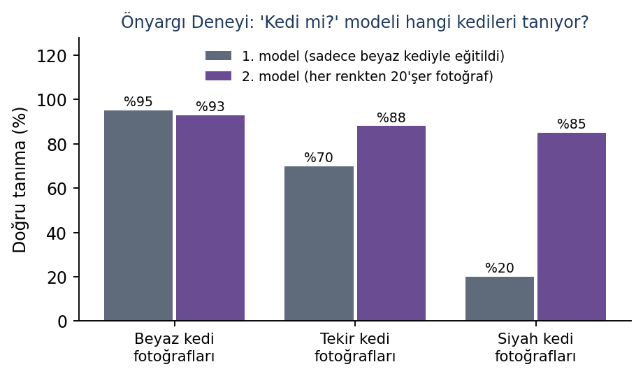

- Ana sayfa
- Tasarım sistemi
- Bileşenler ve renkler
Bileşenler ve renkler
Sitede kullanılan renkler, yazı tipleri ve yeniden kullanılabilir bileşenler. Yeni sayfa yazarken buradaki örnekleri kopyalayabilirsiniz.
Renkler
Ana renk mürekkep mavisidir. Dört atölyenin her birinin kendi rengi vardır ve bir sayfanın atölyesi belirlendiğinde (atolye: yz) başlık ayraçları, tablo başlıkları ve bağlantı vurguları o renge döner. Renkler Word belgeleriyle aynıdır.
Mürekkep
#1F3A5F
Kâğıt
#F7F9FC
Çizgi
#D5DDE7
YZ, mor
#6A4C93
BK, deniz yeşili
#1B8A7E
3D, turuncu
#C8641A
HM, gök mavisi
#2E7DAF
Kural, kehribar
#9A6412
Yazı tipleri
Başlıklar Bricolage Grotesque, gövde metni Lexend, kodlar JetBrains Mono ile yazılır. Lexend okuma kolaylığı için tasarlanmış bir yazı tipidir; geniş harf aralığı genç okurların satırı takip etmesini kolaylaştırır. Üçü de açık lisanslıdır ve sitenin içinden yüklenir, dışarıya istek gönderilmez.
Üçüncü düzey başlık
Gövde metni 17 piksel, satır uzunluğu en fazla 66 karakterdir. Uzun bölümler bu sınır sayesinde yorulmadan okunur.
Atölye etiketleri
YZ BK 3D HM
BKBilim ve Keşif Laboratuvarı (Astronomi)
{% include atolye-etiketi.html kod="bk" uzun=true %}
Kutular
{% include callout.html tur="kural" baslik="Altın kural" icerik="Metin **kalın** olabilir." %}
tur: bilgi | kural | olumlu | dikkat
Tablo
Markdown tablosu yazmanız yeterlidir; dar ekranda kendiliğinden yatay kaydırılır. Başlık satırı sayfanın atölye rengini alır.
| Seviye | Anlamı | Gösterge |
|---|---|---|
| 1, Duydum | Bu beceriyi duydum ama henüz denemedim. | |
| 2, Deniyorum | Yardımla yapabiliyorum. | |
| 3, Yapabiliyorum | Tek başıma yapabiliyorum. | |
| 4, Öğretebilirim | Bir arkadaşıma da öğretebilirim. |
Numaralı adımlar
Yalnızca gerçekten sıralı süreçler için kullanılır; örneğin yıldız projenin yedi adımı.
- Problem ve amaç Neyi çözmek ya da öğrenmek istedik?
- Araştırma Başlamadan önce neyi araştırdık?
- Fikir ve tasarım Hangi fikirleri ürettik, hangisini neden seçtik?
1. **Problem ve amaç**
Neyi çözmek istedik?
2. **Araştırma**
...
{: .adimlar}
Kontrol listesi
- Kapak ve “Ben kimim?” sayfası
- İki atölye bölümü
- Köprü sayfası ve 7. sınıf proje fikri
Kanıt kartı
Önyargı deneyi

- Tarih ve hafta
- 17 Ekim 2026, 3. hafta
- Bu ne?
- Teachable Machine ile kedi mi, değil mi? modeli eğittik. İlk modele yalnızca beyaz kedi fotoğrafı verdik; model siyah kedileri tanıyamadı.
- Bireysel ya da grup, rolüm
- İkili çalışma. Fotoğrafları ben seçtim.
- Ne öğrendim?
- Model yalnızca gördüğünü bilir. Veri tek tip olursa model de önyargılı olur.
- Yapay zekâ
- Teachable Machine (model eğitme aracı). Üretken yapay zekâ kullanmadım.
- Dosya adı
2026-10-17_YZ_onyargi-deneyi.png
Güvenli güneş gözlemi
Zorunlu kanıt- Tarih ve hafta
- 20 Mart 2027
- Bu ne?
- Ekinoks gününde güneş filtreli teleskopla iki güneş lekesi grubunu çizdim.
- Bireysel ya da grup, rolüm
- Grup gözlemi; kayıt tutan bendim.
- Ne öğrendim?
- Güvenlik kuralları sıkıcı değil, gözlerimizi koruyor.
- Yapay zekâ
- Hayır
- Dosya adı
2027-03-20_BK_gunes-lekesi.pdf
{% include kanit-karti.html no="1" baslik="..." atolye="yz" tarih="..." ne="..."
rol="..." ogrendim="..." yz="Hayır" dosya="..." gorsel="/assets/img/..." gorsel_alt="..." zorunlu=true %}
Yapay zekâ beyanı
{% include yz-beyan.html kullandim=true arac="..." amac="..." katki="..." %}
Figür

Kod bloğu
dosya = st.file_uploader("Gökyüzü fotoğrafı yükle", type=["jpg", "png"])
if dosya is not None:
tahmin = model.predict([ozellik])[0] # modelin tahmini
st.success(f"Tahmin: {tahmin}")
Alıntı
“Yıl sonunda kendi topladığım verilerle eğittiğim bir yapay zekâ modelini internette yayınlamak istiyorum.”